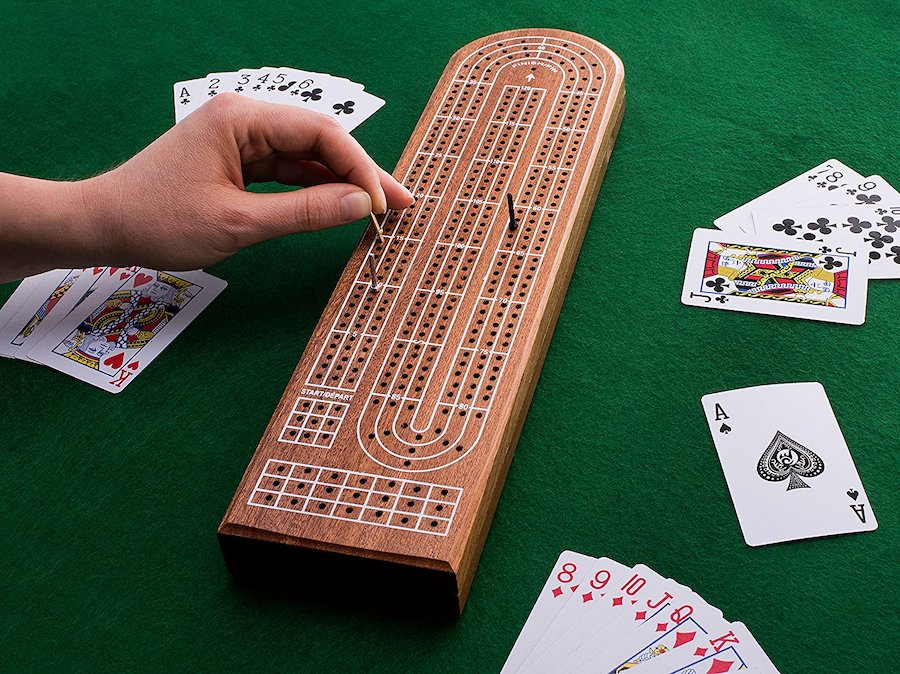

CNC CLASS
This week we had a lecture on how to use the CNC machines. We got a chance to look at these big machines up close and see all the different buttons and components, along with the whole process of setting it up. Our assignment was to design something BIG something using this machine. We could use up to a maximun of half full board measuring 1200x1200mm of 15 mm thick pine plywood boards.
I didn't have too much time to come up with ideas for this project, since I have been busy preparing for Design Dialogues coming up in a few weeks and I've focused on trying to complete final design interventions. I thought back to a board game I would always play with my dad, called cribbage.

The game is a common card game I used to play with my family in Canada, whom I haven't seen since 2019. Cribbage, or crib, is usually played by two players, or two teams, and it involves playing and grouping cards in various combinations which gain points, and those points are then tracked on the board. The first person or team to arrive to the finish line wins.
The classic crib board designs are a flat wooden board approximately 250–300 mm long by 70–80 mm and 10–20 mm deep. Although I wouldn't consider it a "big object", it fit perfectly with the dimensions of the pine plywood boards given to us. What I did notice, however, was how small each peg hole was, so I need to speak to a Fablab member about whether it would be possible to use smaller attachments.